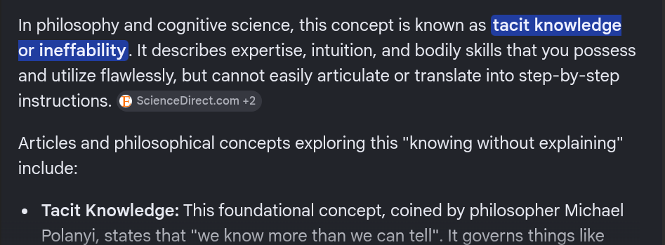
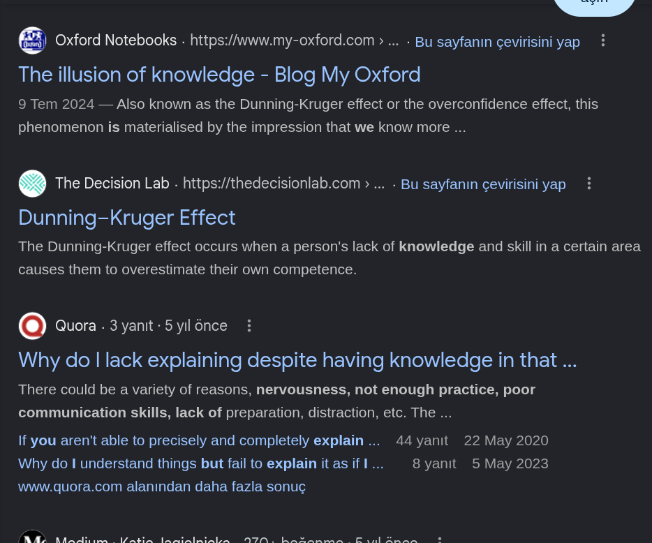
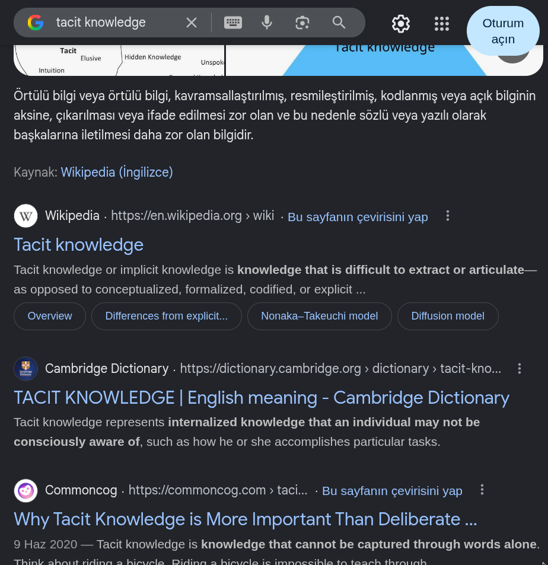

Intelligent keyword generation. Nothing more.

So I haven't gotten over them yet but, soon after I find replacements for the most important services, I will. I for have long been thinking about all I use LLMs for. Thinking about extracting alternative providers for all LLM provided services. Services that I will then turn into standalone products. All of which won't need the dreaded LLM chat box to work.
And, one of these services, one I think LLMs are really good at, is, turning long fuzzy explanations for what you would like to search for into relevant keywords that would yield the results you actually need (with any browser).
It's like, if you open up a browser – (most of them are becoming LLM chat apps away from LLM chat apps but lets assume that ain't true) – and type in a key word, you will get results if there is results.
That is, if you know the precise terms to point to what you are looking for. As in 'Cup selling sites' and not 'Sites that sell cylindrical utensils with a handle, used for drinking liquid'
Say you are looking for articles on the history of Volkswagen. You will type in "history of Volkswagen" and get exactly what you need.
But what if you type in something like "History of this car that has a logo which has a V juxtaposed with a W"? Semantic search might yield some hits but the less direct your query gets, the poorer the the result quality will become. Some times you will get none.
My test search engine was Google. The difference between results from the AI used for the summarizer and the ordinary search engine url listing was not so big though. The query was not so fuzzy anyway. It contained enough keyword text "history , car, logo with v juxtaposed with w" to return valid results without reliance on middleman translation.
But how about this query: "Articles on that kind of knowledge that you are sure you have but just don't have the means to explain."
AI results | Query: Articles on that kind of …

Non-ai results | Query: Articles on …

The non AI results were relatively irrelevant. I was getting a lot of links to articles on the Dunning-Krugger Effect. It seems the AI summarizer is decoupled from the ordinary search engine. I mean, it immediately deciphered I was looking for "articles on tacit knowledge". Still, replacing the query with the right key words "Articles on tacit knowledge" returned the best results.
Query: tacit knowledge

What I need.
I need what the LLM did. The translation. But without the summary. I need the translation mechanism to kick in whenever a query seems like it needs translation, replace the query with the relevant key words and leave the rest to the search engine and me.
That is, the engine should have some mechanism to tell the difference between a vague query and one that is good enough to return valid results without translation. Maybe in a different version just allow me to describe intent (like we do with AI these days) and then fire off different tabs with all relevant keywords filled in. Say "Need stats on the percentage of people that depend on productivity for a living" to tabs with keywords "UNESCO creative economy employment percentage global workforce" or sth like that.
It should replace my search box with the key words if it translates the query. It should then leave the rest between me and the engine.
The engine output should then be links to relevant articles for the now more relevant key words. Not an AI summary. Just like it was in the old days. All this should happen without my knowledge.
I also want to have a search history that includes translation history. That is, my explanation,the keywords and the results.
The major components for all this are already available. When using an LLM, you will notice whenever you enter some long (at least its been so very often in my case) explanation for what you want, it fires off queries to the web. These queries are an almost always (never been innacurate for me) accurate translation of your explanation to the right key words.
Same applies to today's in-browser summarizers. Its the same explanation as above.
Why this isn't implemented into browsers yet is something I don't understand. Even with Chrome. Correct me if I am wrong but I havent seen it done anywhere as of when I am writing this.
I am sure a lot of people would be interested the translation layer as a service. First, it burns way less tokens using AI this way. There is no need to ingest and summarize results. Only to translate queries to keywords and leave the rest to the user and the browser.
Second, theres a hightened feeling of autonomy. Some users don't like that but I do. I get to do the work of selecting relevant results from returned blue links. Or just using the key words as pointers to further independent research. I don't know why the summarizer is an opt out feature though. I feel it should be opt in.
Also, no one is interested in information about "We translated this." or.. "This is AI powered". There's something about it that makes the user feel they are dealing with a human not a tool (wc it is a tool). Plus, the user came to find results not to know how you get them results.
And by the way, I aint saying anyone ever brings long explanations to a search engine. Before LLMs I am sure people had to go through some struggling or just do consulation to find the right key words to use for their own research. LLMs make the translation easy. However, they gate keep the service. They generate the key words and keep you within the chat window.
But these are money making companies anyways so…. Anyways, I digress.
On how the 'needs to be translated' mechanism would be implemented.
I guess I will leave that for another thinking session. But I think it would be fun implementing that. It probably wouldn't even need to use LLMs. I am thinking maybe spacy. Some means to tell how vague a query is. I am however sure someone that's already studied all thats needed would implement this in a weekend.
Alright.. that's it for this one..